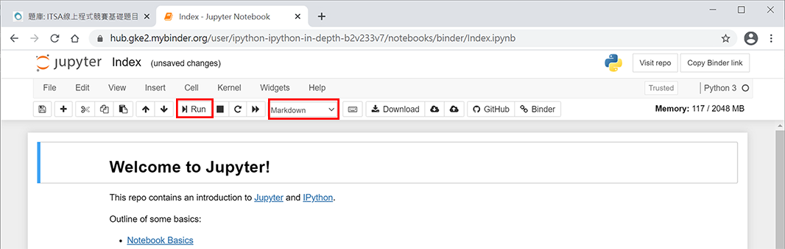
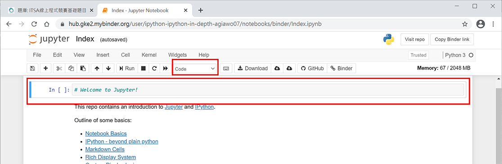

課程目標
為了幫助非資訊領域同學具備基礎程式實作的能力，導入Python基礎程式設計課程，課程採模組化設計包含變數、資料類型與運算子、條件、迴圈與函數，同時將課程內容與非資訊領域同學經常使用的試算表軟體(Excel)進行對照。為驗證同學學習後實際的程式設計能力，將使用程式自學平台(E-Tutor)線上題庫中基礎題目專區的對應題目作為跨域同學程式模組的驗證機制，實際驗證同學在每個模組的學習成效。
E-Tutor帳號註冊與登入
請同學前往程式自學平台(E-Tutor)並進行帳號註冊與登入。登入後請點選 程式自學平台-線上題庫-基礎題目專區。
Python線上執行環境
請點選瀏覽器開啟Jupyter中Try Classic Notebook，開啟瀏覽器版Jupter norebook後如圖1，請將Markdown選項改為Code，會看到如圖2程式模式，使用者可以在綠色方塊輸入下列程式並點選Run執行
print('Hello')
圖1. 瀏覽器版本Jupyter Notebook

圖2. 瀏覽器版本Jupyter Notebook程式模式